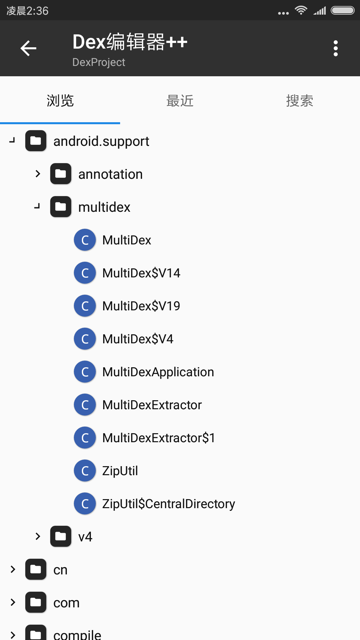

文件管理器
TODO：
- 【已解决】安卓手机Google Pixel3用文件管理管理文件
- 【已解决】安卓手机中打开log日志文件查看内容
- 【部分解决】安卓手机Google Pixel3中用RE文件管理器拷贝和移动文件夹
- 【已解决】导出安卓手机Google Pixel3中的文件
- 【未解决】安卓手机Google Pixel3中用ES文件管理器拷贝和移动文件夹
- apk安装
- 【已解决】安卓手机中安装YouTube的apk报错：应用未安装
- 【已解决】安卓中把微信传输收到的apk.1改名为apk去掉.1的后缀
- 【无需解决】Android 9的Google Pixel3中安装apk报错应用未安装：可能和sdkVersion有关
- 【已解决】安卓手机Google Pixel3中用ES文件管理器安装youtube的apk
- 【已解决】Google Pixel3中如何彻底卸载提示未针对此用户安装的YouTube应用
- 【已解决】安卓手机Google Pixel3中安装apk应用
- 【未解决】用腾讯手机管家的APK安装器安装安卓apk应用
- Android的文件管理器
- 推荐：
文件管理- 应用宝中搜
文件管理，而找到的
- 应用宝中搜
- 其他可选
ES文件管理器REMT管理器- 安卓模拟器中的文件管理器
- 夜神模拟器中自带文件浏览器
- 推荐：
- 常见的用途
- 给文件改名
xxx.apk.1->xxx.apk
- 查找文件
- 再去安装apk文件
- 查看文件内容
- 查看log日志内容
- 给文件改名
MT管理器
MT=MT管理器=MT Manager=MT Manager for Android- 是什么：安卓中的一个文件管理器
- 常被简称为：
MT2- 因为最新版本是v2
- 比如：
- MT浏览器_V2.5.4.apk 文件管理器
- 文件管理神器 MT Manager v2.6.1 for Android
- MT管理器2.0
- 比如：
- 因为最新版本是v2
特点
- 支持在VirtualXposed中使用MT
- 除了普通文件管理功能外，还支持APK反编译相关功能
应用简介
MT管理器是一款强大的文件管理工具和APK逆向修改神器。
- 如果你喜欢它的双窗口操作风格，可以单纯地把它当成文件管理器使用。
- 如果你对修改APK有深厚的兴趣，那么你可以用它做许许多多的事
- 例如汉化应用、替换资源、修改布局、修改逻辑代码、资源混淆、去除签名校验等，主要取决于你如何使用。
主要功能
- 文件复制、移动、创建软链接、重命名、删除、创建文件(夹)，文件批量操作。获取 Root 权限后可访问系统目录，挂载文件系统为读写，修改文件权限和所有者。
- 像 WinRAR 那样打开 ZIP 格式文件，可以对 ZIP 内的文件进行删除、重命名、移动，添加/替换外部文件到 ZIP 中，无需解压后再重新打包，同时支持单独解压 ZIP 内的部分文件。
- 自带强大的文本编辑器，可以流畅编辑大文本文件，支持设置是否显示行号、开关自动换行、双指缩放字体大小、自动识别编码、代码语法高亮、自动缩进、正则搜索替换。
- 拥有图片查看、音乐播放、字体预览、执行脚本、文本对比等功能，在侧拉栏中可方便地查看存储设备、FTP连接、书签、后台、工具等。
- APK 编辑功能，主要有 DEX 编辑，ARSC 编辑，XML 编辑，APK 签名、APK 优化、APK 共存、去除签名校验、RES 资源混淆、RES 反资源混淆、翻译模式等。
截图举例

